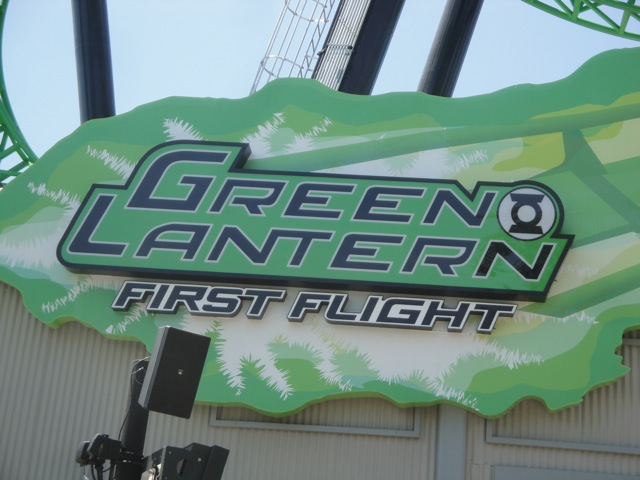
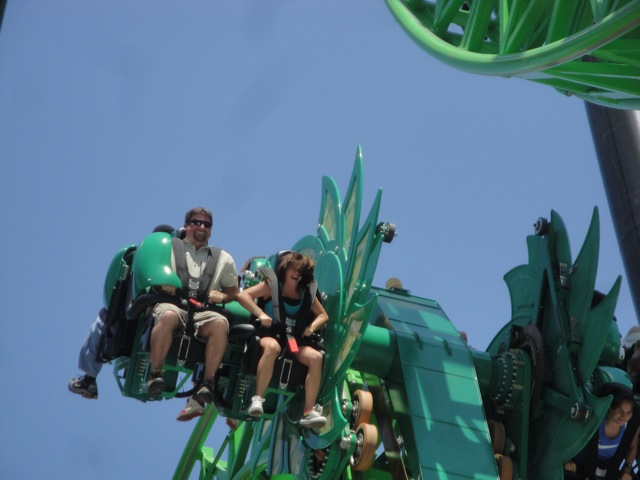
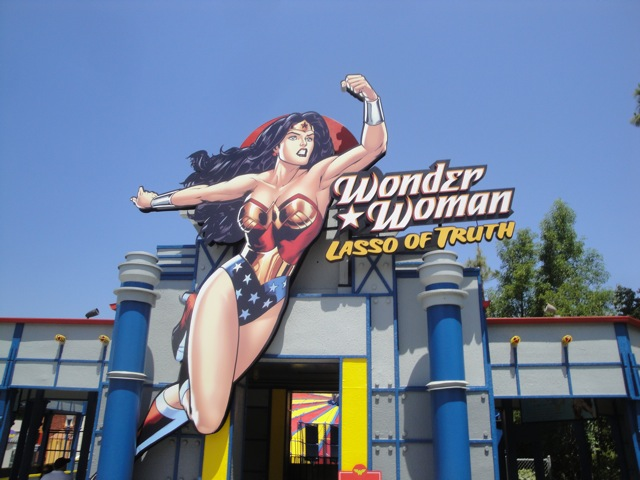
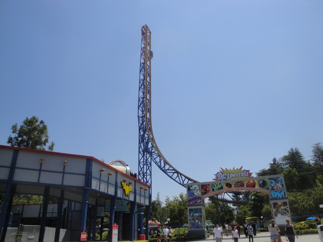

Green Lantern Day
All right. As you all know, Six Flags Magic Mountain just recently added their newest coaster. Green Lantern. And it kicks major ass!!!! And while we're going to post a big update later in the summer combinding all of our SFMM Visits, we had to make an exception for Green Lantern Day as I will not wait till September to have Green Lantern on Incrediblecoasters. Anyways, along with Green Lantern, the entire DC Universe has opened up, and it looks really good.
 But we'll focus more on the rest of DC Universe later. For now, it's all about Green Lantern.
But we'll focus more on the rest of DC Universe later. For now, it's all about Green Lantern.

Yeah. The Green Lantern Sign looks really cool.
That peice of theming is actually really cool. It's actually a video screen and was playing cool stuff at the VIP Party last week.
Ok, to counter all the positive stuff we're saying about Green Lantern, here's an Incrediblecoasters Rant to bring you some negativity. The opening for Green Lantern yesterday was HORRIBLE!!!!!! And I mean HORRIBLE!!!!!! We ran over to Green Lantern first thing in the morning (and never will again), and when we got there, it wasn't open. It was having technical problems. Ok, that's dissapointing. But it's at least not a suprise. New rides have technical difficulties. I understand that. But WHY did they stop the line right outside the building and keep all of the guests outside in the boiling sun!!!? Seriously, what is the purpose of keeping guests standing around in the sun!!? They're not doing anything in the preshow room, so why not have guests wait inside there!!! But what really pissed me off was the fact that Maintenence was actually drilling holes in the rails for a chain to go through!!! Come on now!!!! Technical Difficulties are not something the park can really do anything about, but you CAN have maintenence do something about drilling holes in the rails in the line. Like, oh I don't know....DOING IT BEFORE THE F*CKING PARK OPENS!!!!!!!! I should only hear stuff like this at work, not as a guest in the park. Because guests really love to stand out in the hot sun and listen to the sound of drills that bring back repressed memories of bad visits to the dentist.
 Anyways, let's get back to Green Lantern and how good it is.
Anyways, let's get back to Green Lantern and how good it is.
 While I will talk alot about Green Lantern in the following captions, it's best to just read our Green Lantern Review to see our opinion in full details.
While I will talk alot about Green Lantern in the following captions, it's best to just read our Green Lantern Review to see our opinion in full details.
 Holy Crap!!! This last hump is freaking sweet!!!! You almost always get a crazy flip right here!!! =)
Holy Crap!!! This last hump is freaking sweet!!!! You almost always get a crazy flip right here!!! =)
 But even if you don't flip at all on Green Lantern, it's still amazing as it has some really insane ejector air that will take your breath away.
But even if you don't flip at all on Green Lantern, it's still amazing as it has some really insane ejector air that will take your breath away.
Yeah. I'm glad I'm not waiting in that. Not worth it.

Yeah. Those are some of the faces riders on Green Lantern make. (And these people are nothing compared to other people I saw.)
 Green Lantern Flipping Goodness.
Green Lantern Flipping Goodness.
"THIS RIDE HURTS MY BRAIN!!! MAYBE MARATHONING IT ISN'T SUCH A GOOD IDEA!!!!"
Oh yeah. And Batman the Ride also finally reopened up!!! =)
Anyways, let's check out the rest of DC Universe.

Dude!!!! What is this ride!!!!!
Holy Crap!!!! Grinders Gearworks looks GOOD as Wonder Woman's Lasso!!!!!!!
And as for Atom Smasher, it is now called the Flash.
All the flat rides look awesome now that they have been brought back to life in the DC Universe retheme.

Yeah. I'd give the whole Green Lantern makeover an A+!!!! Great job Six Flags!!!
 And as for Green Lantern, while X2 is still the best coaster in the park, Green Lantern did manage to break my Top 10 and is up there with many great rides such as Kumba, Montu, and Phantom's Revenge!!!
And as for Green Lantern, while X2 is still the best coaster in the park, Green Lantern did manage to break my Top 10 and is up there with many great rides such as Kumba, Montu, and Phantom's Revenge!!!
Oh, and if the Freestyle Coke Machine only has Diet Sodas left, don't do a Diet Suicide. Trust us. It's disgusting.
Home